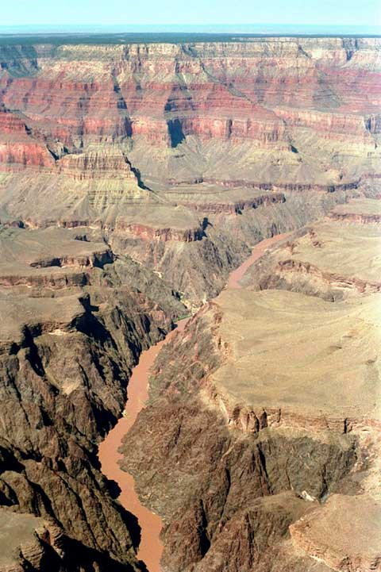
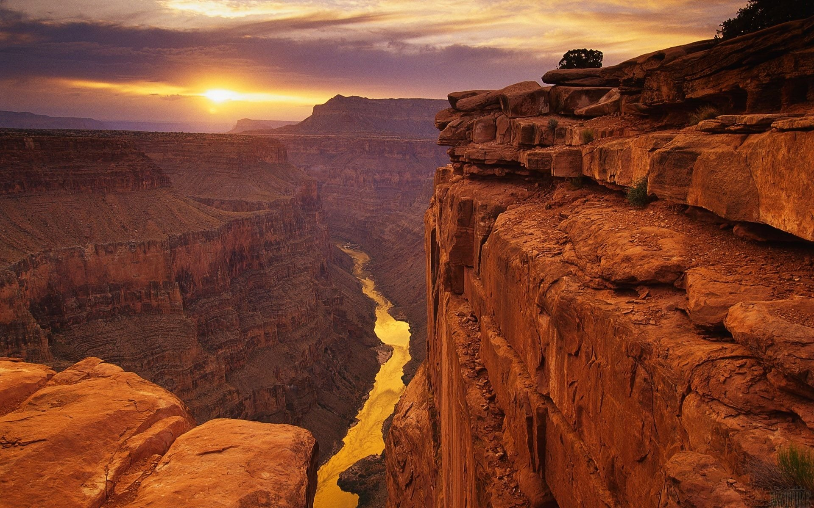

Grand Canyon
Details
The Grand Canyon is regarded as one of the world's greatest examples of arid-land erosion. The Colorado River carved the canyon, which is 277 miles long and 4,000 feet deep on average. It reaches a depth of 6,000 feet at its deepest point and a width of 18 miles at its widest. The Grand Canyon's significance, however, is not confined to its geology. There are many major habitats in the Park. The presence of five of the seven life zones (represented as the Lower Sonoran, Upper Sonoran, Transition, Canadian, and Hudsonian) contributes to the Park's high biological richness. It also acts as an ecological sanctuary, with relatively undisturbed remains of vanishing ecosystems. It is home to a diverse range of rare, endemic, and highly protected plant and animal species.
History
The Grand Canyon is a World Heritage Site that spans 1,218,375 acres in northeastern Arizona on the Colorado Plateau. This similar terrain is semi-arid, with high plateaus and structural basins typical of the southwestern United States. Water sources have carved deep valleys in the sandstone, resulting in a plethora of steep-walled canyons. Forests grow at higher elevations, and desert basins grow at lower elevations.

Physical Features
The process began approximately two billion years ago with the formation of the inner gorge's igneous and metamorphic rocks. Layer upon layer of sedimentary rock lies above these ancient rocks, each giving a different tale about the natural history of the Rocky Mountains region. Then, between 70 and 30 million years ago, plate tectonics raised the whole region, resulting in the high and relatively flat Colorado Plateau. Finally, barely 5-6 million years ago, the Colorado River began to cut its way southward. Further erosion by tributary streams resulted in the canyon's expansion. These natural processes are still at work today, continuously deepening and widening the Grand Canyon.